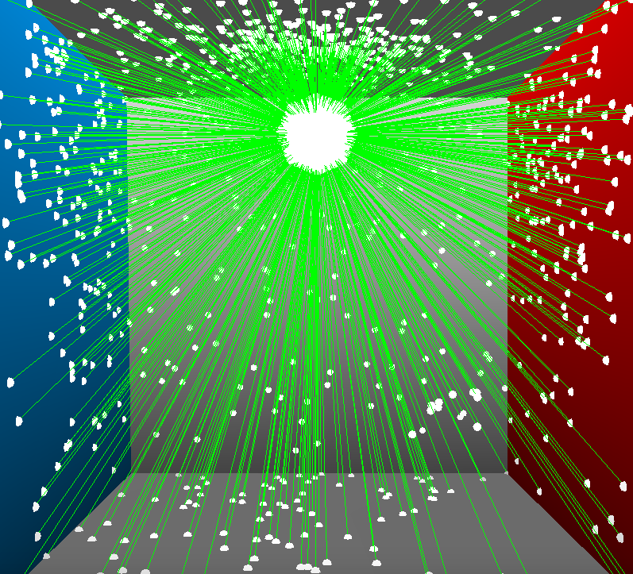
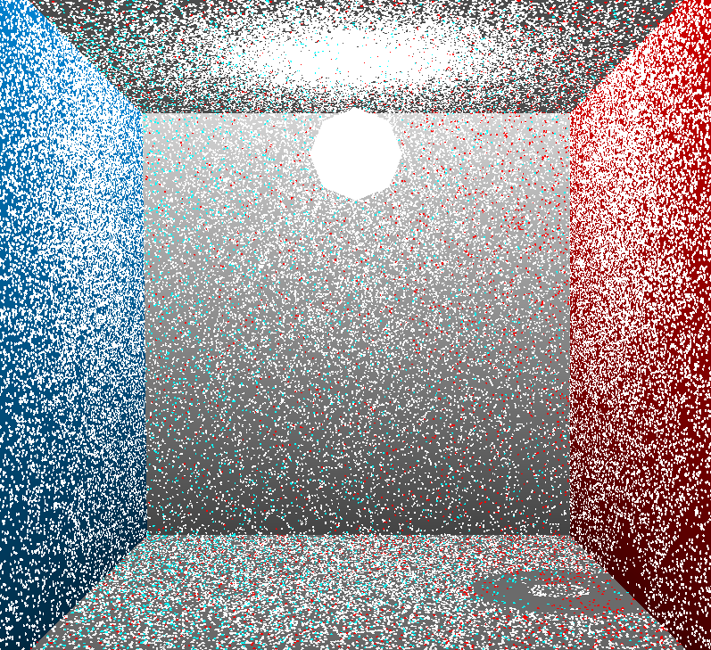
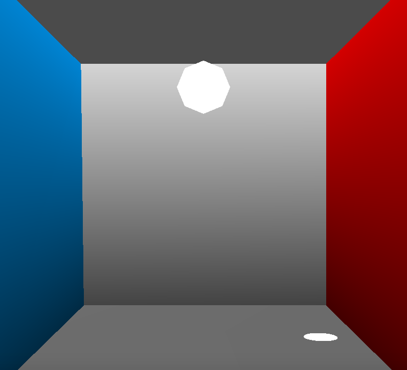
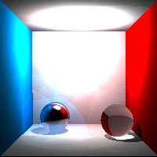
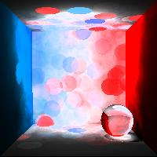
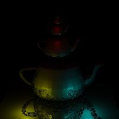
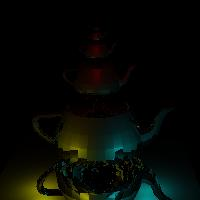
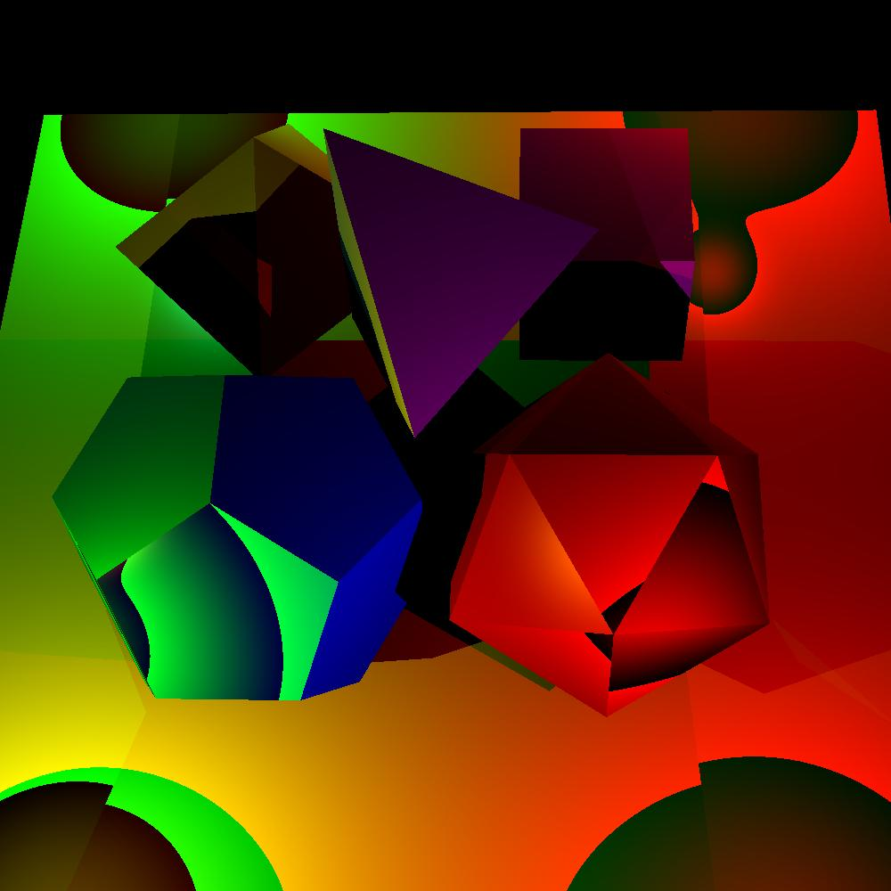
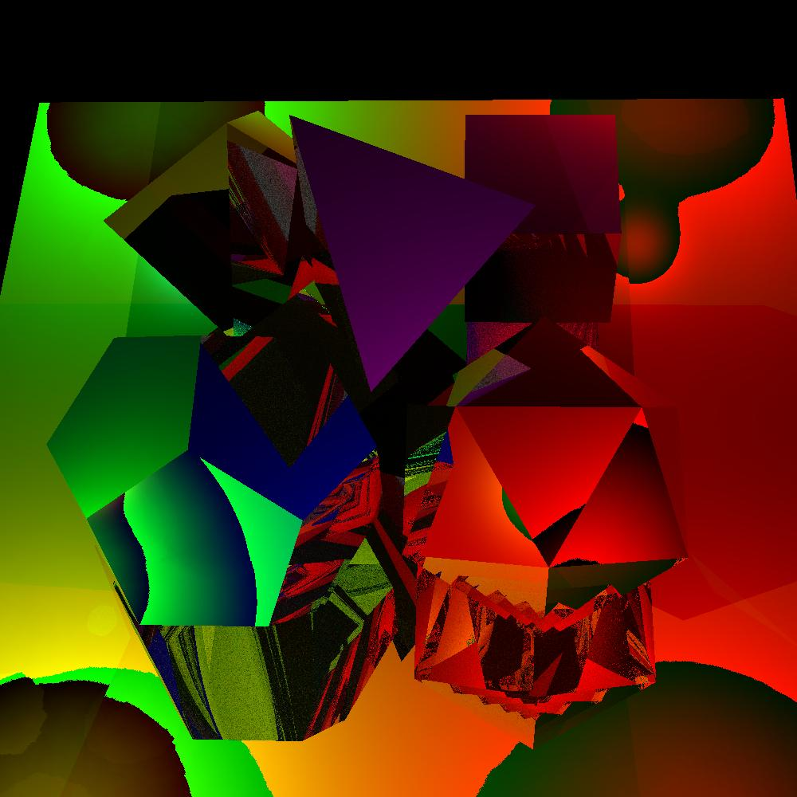
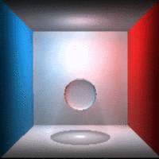

PHOTON MAPPING
COS 526, Fall 2018
Assignment 3
Kara Bressler, karab
Here, we implement photon mapping, an algorithm for synthesis of global illumination to mimic unbiased lighting.
To run this program, run 'make' inside the 'cos526_photon' folder. Then, run the program in the appropriate directory from the command line with the second and third arguments dictating the input scene and the output image names, respectively. Change the number of photons in the global photon map with the '-globalPhotonCount' parameter and the number of photons in the caustic photon map with '-causticPhotonCount' parameter. Resolution can be altered with the '-resolution' parameter.
./src/photonmap ./input/cornell.scn ./output/cornell_newImage.jpg -resolution 200 200 -globalPhotonCount 4000 -causticPhotonCount 10000
Below, we'll look specifically at the two passes of photon mapping: photon tracing & rendering.
PHOTON TRACING
PHOTON EMISSION
For every light source in the scene, we emit photons in random directions. The total number of photons emitted from each light source are proportional to the power of the light source such that each photon carries approximately equal power. The assigned R3Light sources all are given the same value for Intensity, and thus we use the respective RNRgb value of the light to determine a light's intensity instead.
Currently we've implemented the point light correctly with proper calculations for uniformly randomly sampled rays from the light source and proper power fall-off. Area, directional, and spot lights are in the works so that the distribution of photons is proportional to the power in each direction. Each light source has a function returning a randomly sampled ray from the light source with the name RandomlySampledRay().

PHOTON SCATTERING
During photon scattering, we trace photons via reflected and refracted rays through the scene. At each ray-surface intersection, we generate a secondary ray along a direction of diffuse reflection, specular reflection, transmission or absorption with probability proportional to kd, ks, kt, and (1 - kd+ks+kt) as calculated via BRDF importance sampling analysis.
In BRDF importance sampling, we compute the reflected directions of diffuse and specular reflected rays according to the equations from Jason Lawrence's paper. The specularly reflected ray distribution is centered around the perfect specular reflective direction, and the diffusely reflected ray distribution is centered around the surface normal at the point of ray-surface intersection. Functions for BRDF importance sampling can be found in render.cpp.
For each surface intersection during photon tracing, we use Russian Roulette to terminate rays with probabilty p (as determined by the property of the material) and multiply the power of the surviving rays by (1.0 / p). This allows for photons in the scene to have relatively similar powers while following the law of conservation of energy and not introducing more power than was originally emitted into the scene by the original light sources.
PHOTON STORAGE
Photon-surface intersections are stored in a kd-tree. For each photon we retain the position, incident ray/direction, and power in the following data structure:
struct Photon {
R3Point position;
R3Ray direction;
RNRgb power;
};
We use the R3Kdtree class in R3Shapes to implement our kd-tree. This provides a fast look-up for the N closest photons in the photon map by using R3Kdtree's FindClosest() method. See Section 2.1.3 in Jensen, 2001 for more details about photon storage.
MULTIPLE PHOTON MAPS
We implement two separate photons maps for global (L{S|D}*D) and caustic (LS+D) ray paths. Global ray paths represent the traveling course of all photons emitted from the light sources, while caustic ray paths represent high energy photons from specular and transparent surfaces.
Right now, both photon maps are consulted independently at rendering time as we will look at next.
Here's a visualization of the placement of photons in the global and caustic photon maps respectively.


RENDERING
CAMERA RAYTRACING
We implemented a raytracer to deal with transmission of light. This raytracing shoots a ray from the camera's eye through each pixel and bounces a ray around the scene until a diffuse surface is found. From this diffuse surface, we then identify the resulting color by adding up contributions from direct ray-traced illumination, indirect illumination from the global photon map, and caustic illumination from the caustic photon map.
I am still a little unclear about rendering the calculate of indirection illumination from the radiance estimate, so I need to ask about that.

RADIANCE ESTIMATION
From a look-up in the global and caustic pre-computed photon maps, radiance is calculated by summing up the N closest photons in the photon map, multiplying by the surface's BRDF, and dividing by the surface area from which the photons were sampled. This is an estimate of surface radiance as we are sampling the light from approximately flat surfaces.

As for volume and volume caustic pre-computed photon maps, radiance is calculated by summing up the N closest photons in the respective photon map, multiplying by the phase function (we sample uniformly in all directions so this is inconsequential for us), and dividing by the volume from which the photons were sampled. This is an estimate of volumetric radiance as we are sampling light's interaction with the participating medium and thus the photon interactions are occuring in 3D space.
We implemented cone and Gaussian filtering methods for weighting photons during radiance estimation. Images to come.
PIXEL INTEGRATION
For surfaces with a combination of diffuse, specular, transparent, and absorbing properties, we want to trace multiple rays per pixel (N) and average the radiance computed for all rays to estimate the radiance to store in the output image for each pixel.
Below from left to right, we see an example with N=1, N=4, N=16, and N=32.


And here we see an example with the raytraced version on the left and our rendition with N=32 on the right.


PARTICIPATING MEDIUM
We conducted ray-marching in the scene to calculate single scattering. For every ray shot into the scene, we would sample N uniformly distributed points on the ray's trajectory to

In the future we could run the program with two extra photon maps: a volume photon map & a volume caustics photon map. While ray-marching along these N uniformly distributed points on the ray of camera -> surface-intersection, we would look up in our new respective maps the closest
ART GALLERY
PARTICIPATING MEDIUM
We implemented a raytracer to deal with transmission of light. This raytracing shoots a ray from the camera's eye through each pixel and bounces a ray around the scene until a diffuse surface is found. From this diffuse surface, we then identify the resulting color by adding up contributions from direct ray-traced illumination, indirect illumination from the global photon map, and caustic illumination from the caustic photon map.
I am still a little unclear about rendering the calculate of indirection illumination from the radiance estimate, so I need to ask about that.
RESOURCES
Here's a list of the resources consulted and used to complete this photon mapping assignment:
This write-up is written in the SEATTLE typeface as part of my Topography Typography project.
{kind=link}
{kind=link}
{kind=link}
{kind=link}
{kind=link}
{kind=link}
{kind=link}
{kind=link}
{kind=link}
{kind=link}
{kind=link}
{kind=link}